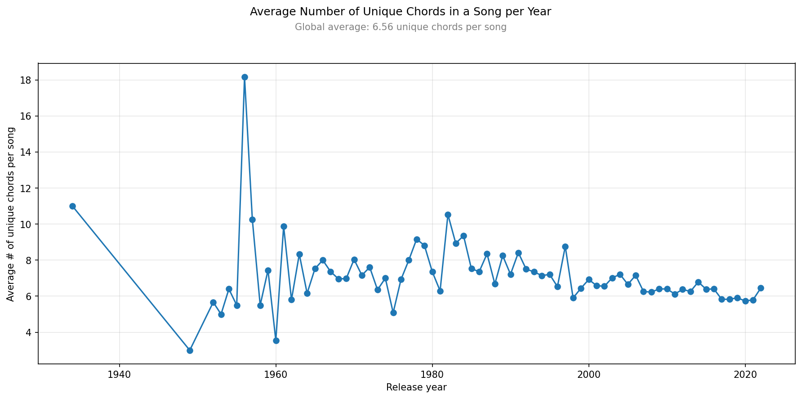
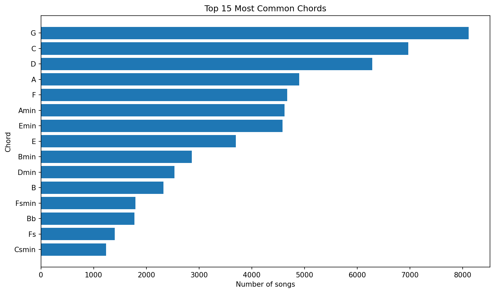
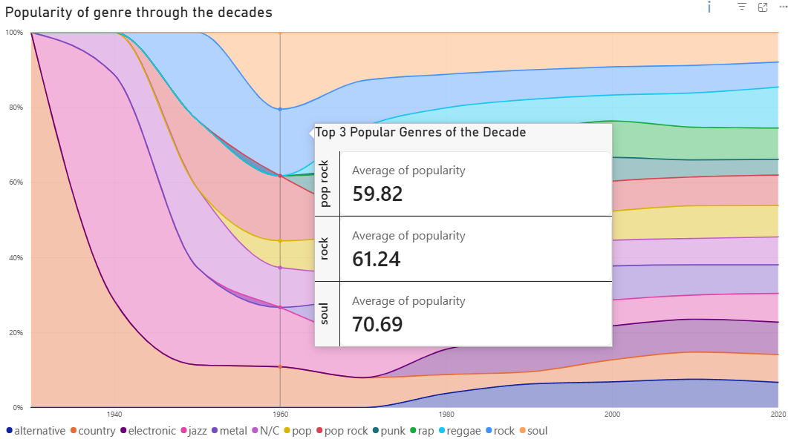
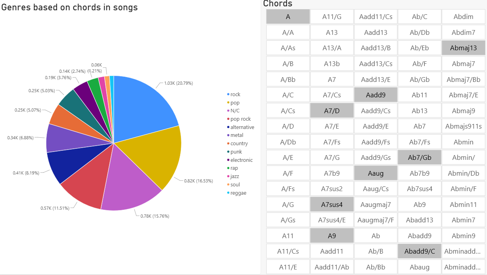

We are using data from Spotify that includes song style attributes, and chord progressions. We are interested in explorying the relationship between Chord Progressions and the types of songs they are found in. Our goal is to understand how different genres of music use chords, and how these patterns change over time. We plan to bring in a musical 'staff' that shows the different chords, that when clicked on, can then be used to filter the data. When clicking a chord progression, that note will be pushed above the staff, with a scatterplot of all related songs showing from there. We may color the dots by genre, or other attributes to easily identify patterns.



